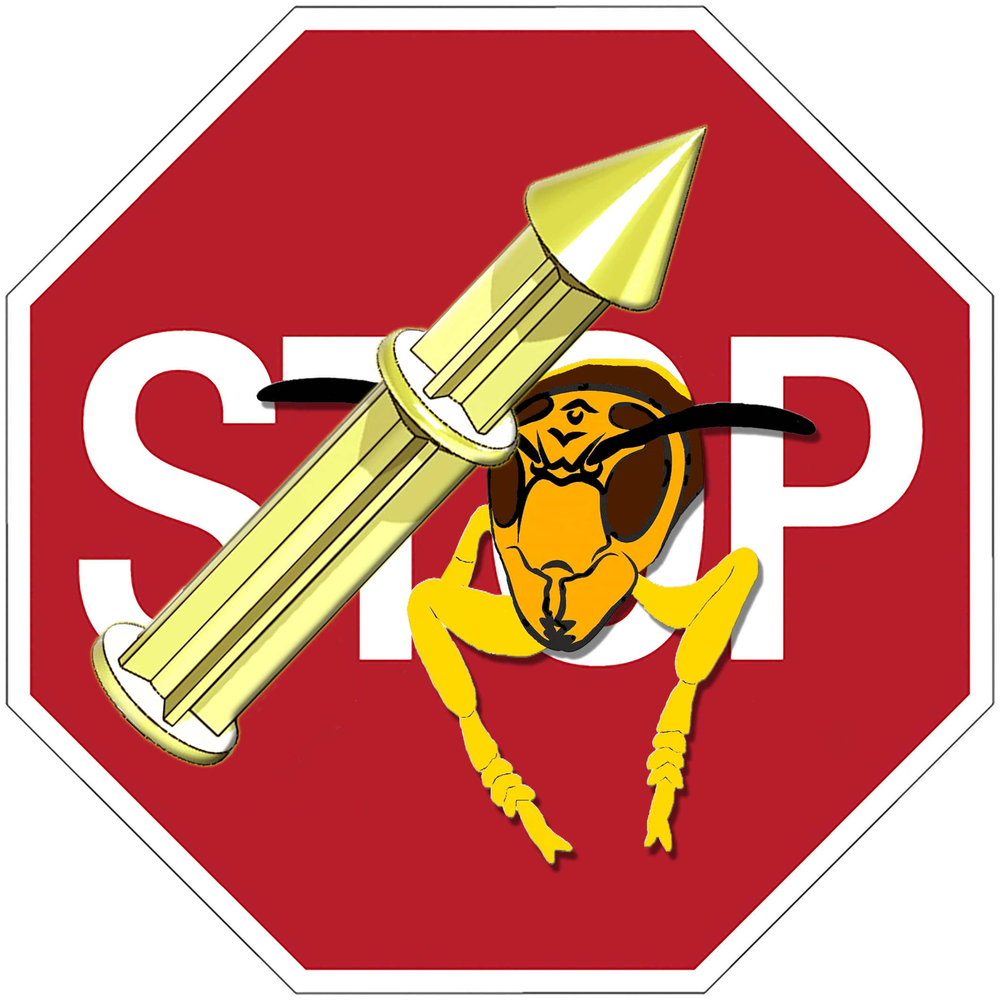
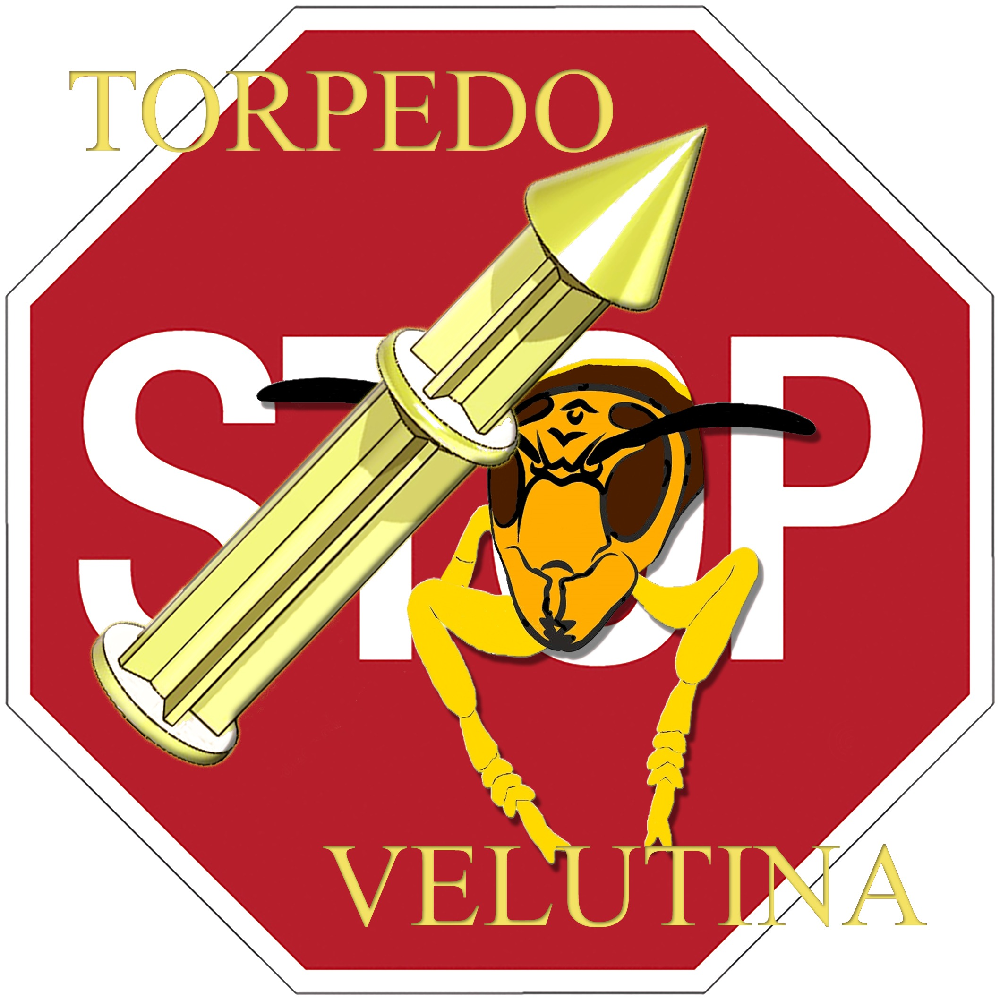

01 · HERRAMIENTA
¿Qué es?
Una herramienta concebida para eliminar nidos de Vespa velutina. Está pensada para nidos visibles en los que pueda quedar colocada.

TORPEDOVELUTINAEl Torpedovelutina es una herramienta diseñada para facilitar la eliminación de nidos de Vespa velutina. En esta página encontrarás información general sobre el proyecto y un documento con las instrucciones de uso.

Estos son algunos de sus puntos principales:
Una herramienta concebida para eliminar nidos de Vespa velutina. Está pensada para nidos visibles en los que pueda quedar colocada.
Su diseño se comparte gratuitamente bajo una licencia Creative Commons, con reconocimiento de la autoría y sin comercialización. Las obras derivadas quedan sujetas a la misma licencia.
El proyecto fomenta la colaboración para compartir dudas, experiencias, sugerencias y posibles mejoras del diseño original.
Consulta el documento completo, que incluye las indicaciones, restricciones y notas del proyecto.
Puedes contactar para compartir consultas, experiencias, sugerencias o mejoras sobre Torpedovelutina.